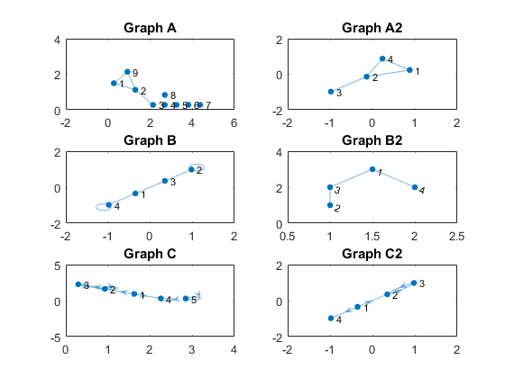
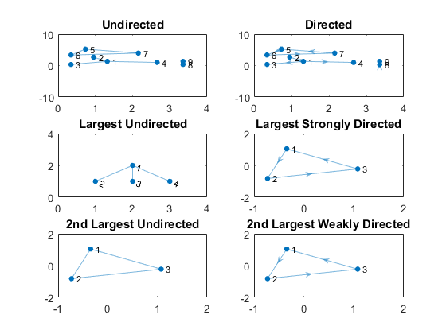

(2) Manipulating Graph Objects
Contents
Intro
Created by Brighton Ancelin
This toolbox has four main objectives:
- Help the user import a graph from a file or matrix into MATLAB as a graph object
- Help the user perform common operations and alterations on graph objects
- Provide tools for basic analysis of graph objects and calculation of key metrics
- Provide a variety of different visualization means for graph objects, both time-varying and time-invariant
In this page, we will focus on manipulating and altering graph objects.
Convenient Cleaning Functions
This toolbox was made for a group whose primary objective is to analyze disease spread. When analyzing disease spread, lone nodes (nodes that have no attached edges) may sometimes be undesirable in a graph, and they can be removed with the pruneLoneNodes function. In addition, self-edges (edges that connect a node to itself) can tamper with calculations and may not always be realistic constructs. These can be removed with the pruneLoopbacks function. These two functions can be used in tandem with the cleanGraph function.
graphA = graph([1,2,9,9],[2,3,1,2]); % Nodes 4-8 are lone nodes graphB = graph([1,2,4,3,1],[4,2,4,2,3]); % Nodes 2 and 4 have self-edges graphC = digraph([1,2,1,2,4,3,5,],[2,3,4,2,4,2,5]); graphA2 = pruneLoneNodes(graphA); graphB2 = pruneLoopbacks(graphB); graphC2 = cleanGraph(graphC); subplot(3,2,1); plot(graphA); title('Graph A'); subplot(3,2,2); plot(graphA2); title('Graph A2'); subplot(3,2,3); plot(graphB); title('Graph B'); subplot(3,2,4); plot(graphB2); title('Graph B2'); subplot(3,2,5); plot(graphC); title('Graph C'); subplot(3,2,6); plot(graphC2); title('Graph C2');
Compressing Node IDs
When dealing with large datasets, you'll often find that node IDs are not simply enumerations of the nodes: many values in between the connected node IDs are unused. If you're only concerned about the structure of a graph, and not so much the specific numbers assigned to each node, then compressing node IDs is a great way to speed up your processing and clean up your visualizations. In some cases, it may even be essential for your computer to perform without crashing.
The function exportCompressedNodeIDs will take in a filename and node columns, and compress the IDs of each node to be ordinal. For example, if we wanted to compress the file 'ex_largeNodeIDs.txt':
4320342 6948322
9528929 1058289
981239 4320342
3892347 2423499
3892347 1058289
3892347 981239
1058289 4320342
We would use the following code:
filename = 'ex_largeNodeIDs'; exportCompressedNodeIDs([filename,'.txt'],[1,2]); fileread([filename,'_Compressed.txt'])
ans = 5 6 7 2 1 5 4 3 4 2 4 1 2 5
Extracting Connected Components
Often times, one may want to extract connected components from a graph based on the size of the component. Using the getConnectedBin function, one can extract the nth largest connected component from a graph object as another graph object. For directed graphs, this can be done based on weakly or strongly connected components.
edgeMat = [1,2;... 1,3;... 1,4;... 5,6;... 6,7;... 7,5;... 8,9]; graphObj = graph(edgeMat(:,1),edgeMat(:,2)); digraphObj = digraph(edgeMat(:,1),edgeMat(:,2)); subplot(3,2,1); plot(graphObj); title('Undirected'); subplot(3,2,2); plot(digraphObj); title('Directed'); subplot(3,2,3); plot(getConnectedBin(graphObj)); title('Largest Undirected'); subplot(3,2,5); plot(getConnectedBin(graphObj,2)); title('2nd Largest Undirected'); subplot(3,2,4); plot(getConnectedBin(digraphObj,1,false)); title('Largest Strongly Directed'); subplot(3,2,6); plot(getConnectedBin(digraphObj,2,true)); title('2nd Largest Weakly Directed');
Converting Directed Graphs to Undirected Graphs
While it's preferable to use the isDirected parameter of the importNet function to specify graph directedness, sometimes it can be useful to be able to convert a directed graph to an undirected one. This is done by replacing all directed edges with undirected edges, and then double-weighting any duplicates. A directed, unweighted graph can be converted to an undirected, weighted graph with the toUndirected function.
digraphObj = digraph([1,2,3],[2,3,2]); udgraphObj = toUndirected(digraphObj); udgraphObj.Edges
ans =
EndNodes Weight
________ ______
1 2 1
2 3 2